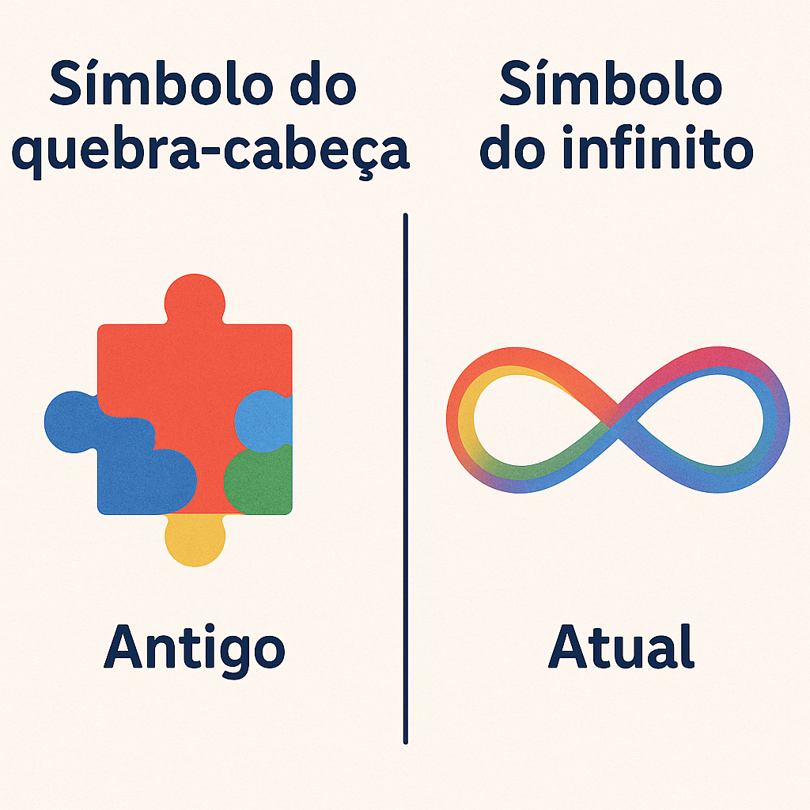
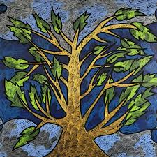

Símbolos e Cores do Orgulho Autista
O símbolo do infinito
O laço com o símbolo do infinito em arco-íris representa a diversidade dentro do espectro autista e a infinita variação da experiência humana.
Cores e seus significados
- Azul: Visibilidade e tranquilidade (mas criticado por remeter a campanhas não inclusivas)
- Arco-íris: Inclusão de todas as formas de expressão e identidade
- Amarelo: Cor alegre e vibrante, usada em campanhas inclusivas
Críticas ao quebra-cabeça
O símbolo da peça de quebra-cabeça é tradicionalmente associado ao autismo, mas muitos autistas rejeitam esse símbolo por representar “algo que falta”. Preferem símbolos mais positivos, como o infinito.
Símbolos antigos x símbolos modernos
Antes, o símbolo mais usado era a peça de quebra-cabeça, que hoje é rejeitado por muitos autistas por representar "algo faltando". Atualmente, o símbolo do infinito colorido é amplamente adotado por representar diversidade e positividade.
Arte autista como símbolo
Vários artistas autistas criam obras que expressam sua forma única de perceber o mundo. Essas obras também se tornam símbolos de orgulho e representatividade.
Outros símbolos relacionados
- Borboleta – transformação, leveza e beleza única
- Círculo colorido – diversidade e inclusão
- Fita do infinito – amor e respeito eternos